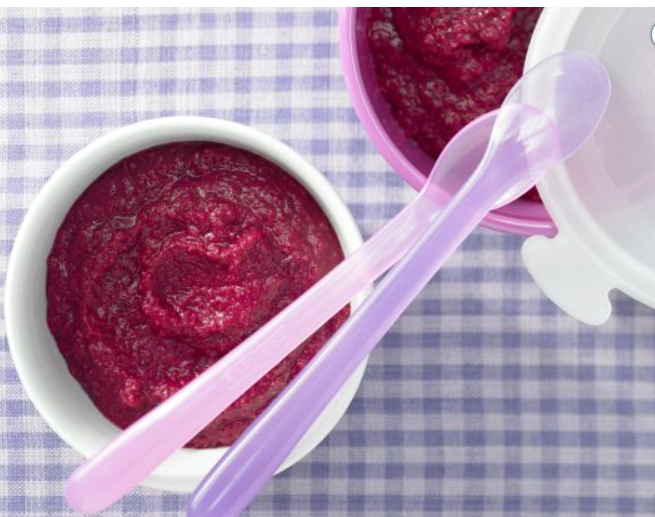

Potato Porridge with Beets

Description
Beetroot and sunflower seeds provide your baby with haematopoietic iron and folic acid; orange juice provides plenty of vitamin C in addition to a delicious taste
Ingredients
- 2 large potatoes (each about 125 grams)
- 2 roots beets (each about 150 grams)
- 1 small orange (about 125 grams)
- 4 tbsps sunflower seed (about 80 grams)
Steps
-
Rinse, peel and dice potatoes into 1 cm (approximately 1/2-inch) cubes
- Rinse beets thoroughly under running water to clean, then peel and dice (wearing gloves is recommended to prevent staining).
- Place potatoes and beets into a small pot with 100 ml (about 1/4 cup) water. Bring to a boil, cover and cook until soft, about 10 minutes.
- Meanwhile, halve and juice orange. Finely grind the sunflower seeds in a food processor.
- Add orange juice and ground sunflower seeds to vegetables and puree everything using an immersion blender. If necessary, adjust the consistency of porridge with a little water. Bring mixture to a boil again.
- Allow mixture to cool slightly, divide into 4 portions and feed 1 serving immediately. Freeze remaining porridge.